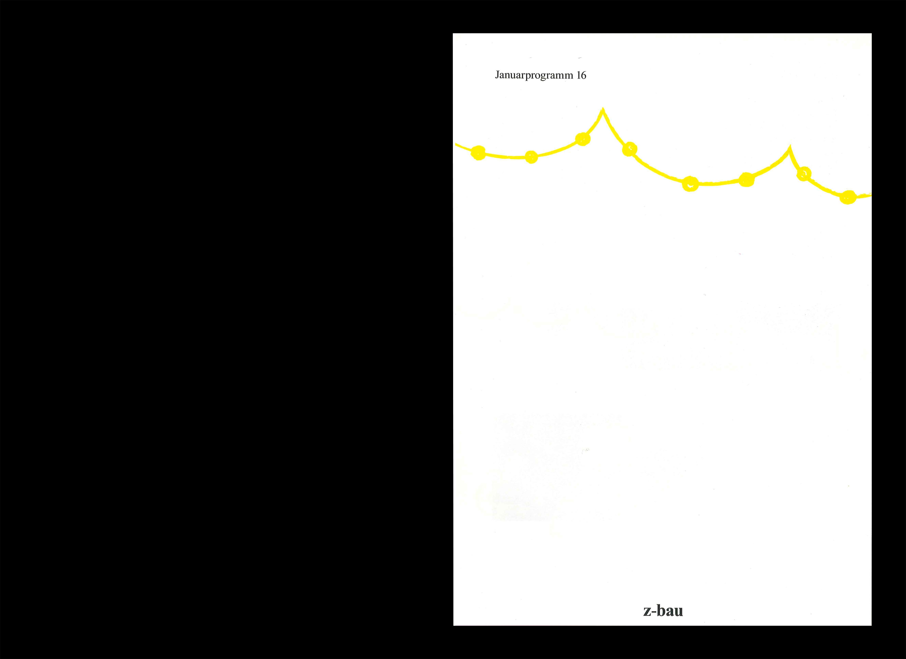
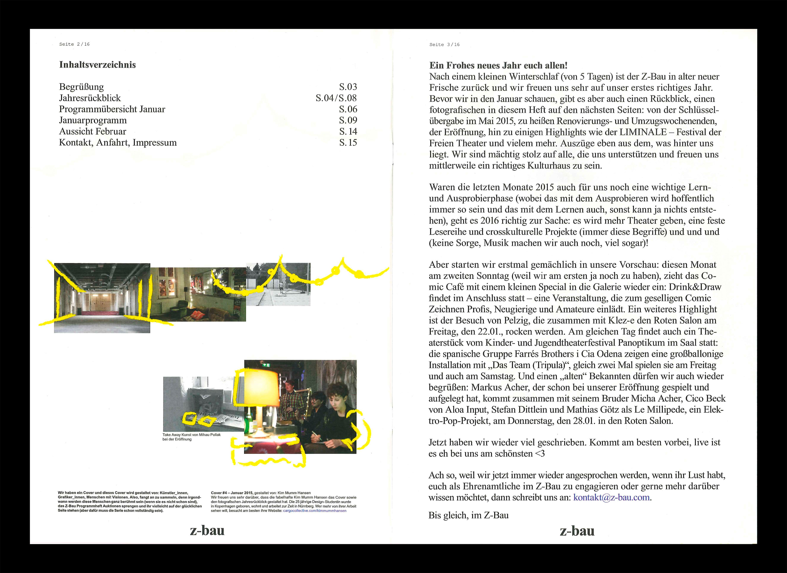
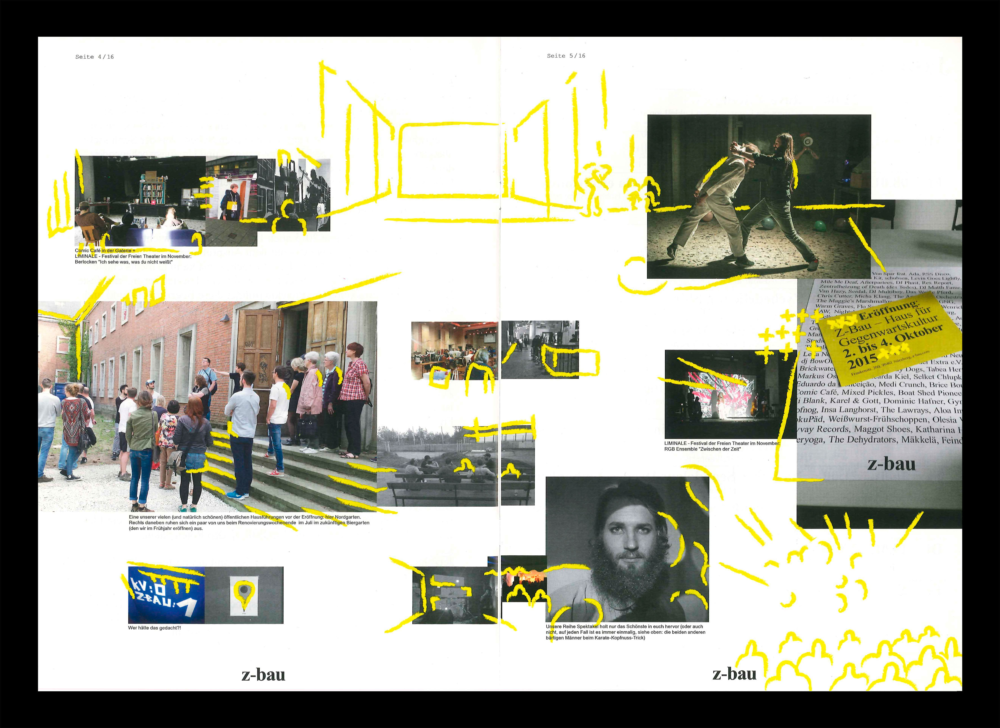
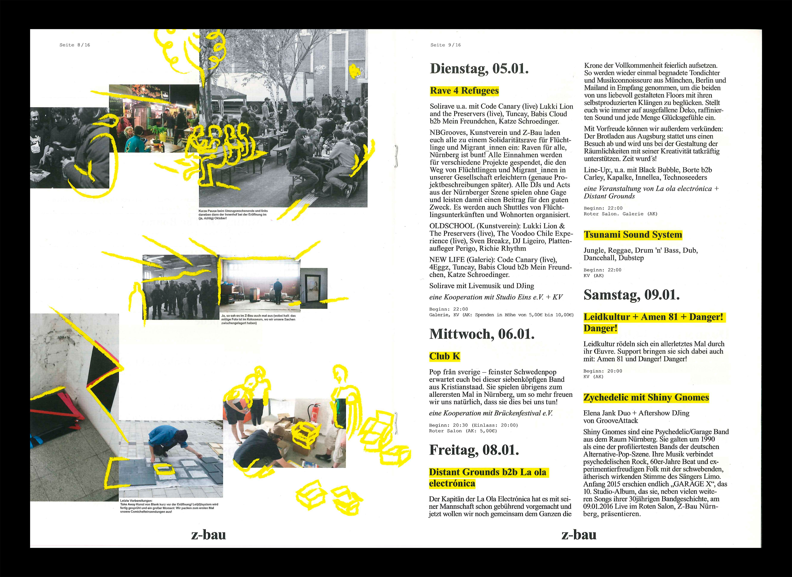
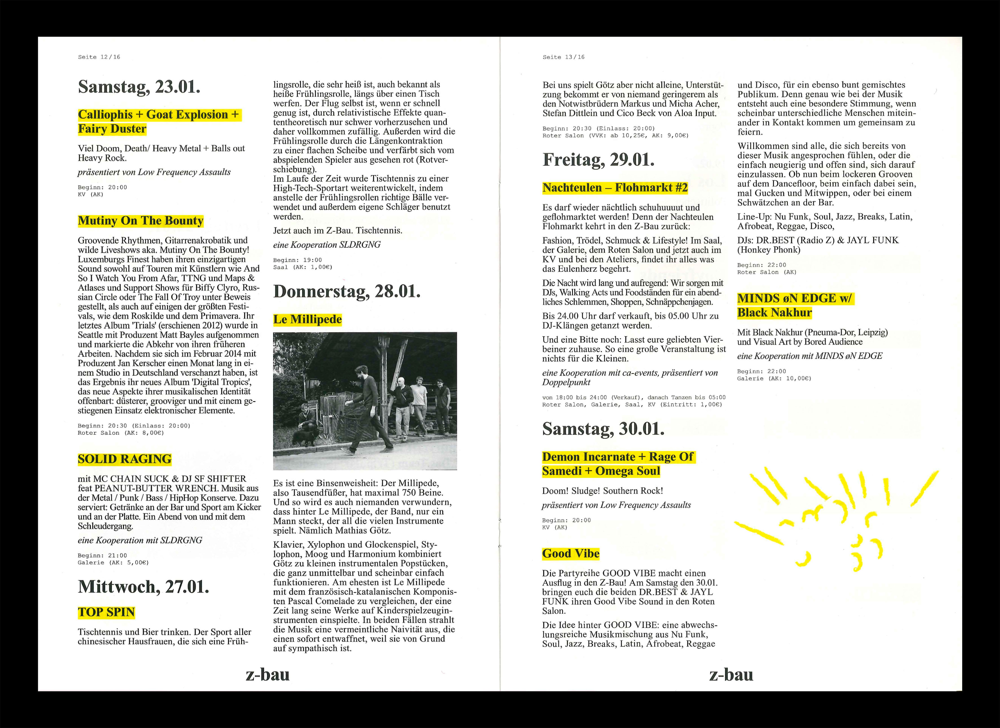
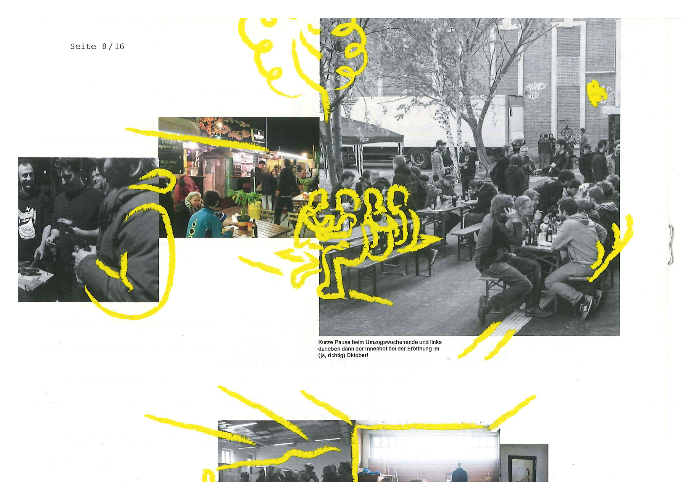
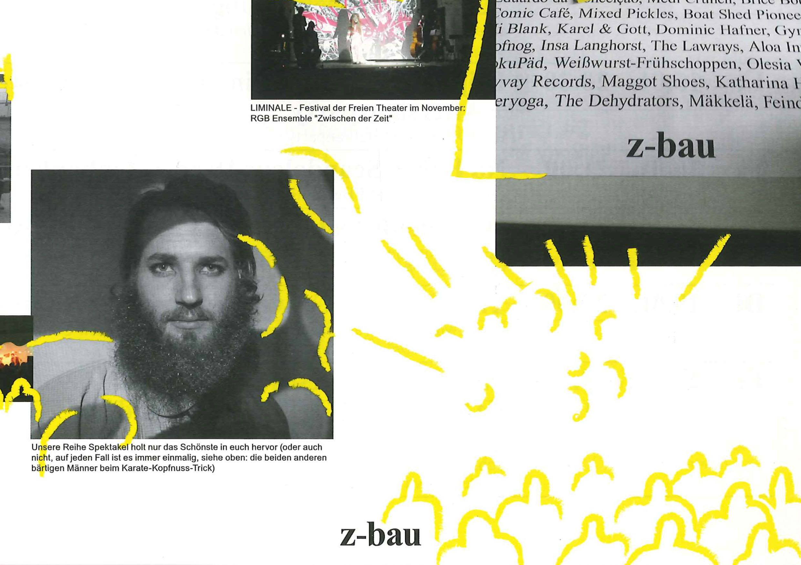

Illustrations for Z-bau magazine
Stepping into 2016, Z-bau’s January issue offered a retrospective of the year that had passed. Mixed photos from 2015 were coming together to think back of all that was accomplished during the first 8 months of the cultural centre. My approach was to find photos with compositions that could transition into the next. The transition could be matching shapes, perspectives, levels, shadows or scenery. These were then sealed with yellow outlining illustrations and additions to help the passage come together and add a festive and celebrative feel.
The layout of the page was dictated by the sequence of photos and their matches. Some short, some long, some large, some small.
I completed the project as an intern for unfun.
    

